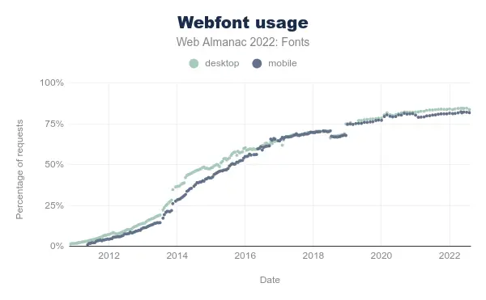

In recent years, the use of fonts on the web has exploded (both in terms of the number of existing fonts and the number of sites using them).
As usual, the Web Almanac is a mine of information, especially via the chapter dedicated to fonts. We learn that the two main suppliers of web fonts are Google and Font Awesome, the latter consisting in the provision of icons. Beyond the potential cost on performance and environmental impacts, some countries have already established that this could contravene the GDPR (General Data Protection Regulation).

Let’s see what good practices can reduce the impact of fonts on the web.
Existing reference systems
The fonts are mentioned in the UX/UI family of the RGESN (Référentiel Général d’écoconception de services numériques) :
- 4.10 – Does the digital service use mostly operating system fonts?
They are also found in GR491 (Responsible Digital Service Design Reference Guide):
- Do you limit the number of fonts loaded?
- Do you give preference to system fonts?
- Are the number of fonts and font variants called (fat, characters used in the project) limited?
Finally, the 115 web ecodesign best practices also mention them:
Good practices
Objectives
In order to reduce the impacts of fonts, several best practices are applicable:
- Give preference to standard/ system fonts : This avoids additional requests
- Use an optimal compression format (today, it is the WOFF2 format). Online tools as Everything Fonts can provide this conversion.
- Limit the number of variants used or use a variable font
- Load only the characters that are really used (for example via a subset)
When ?
These good practices must be implemented as soon as the visual design of the service is done in order to favor standard fonts as much as possible. If this is not possible, then limit the number of variants to be loaded. Finally, when fonts are integrated, use the woff2 format, variable fonts and make sure to load only the characters or languages actually used.
Ease of implementation
If the site is already online, it can be complicated to change the font used. On the other hand, technical optimizations are easy to implement (format, variable font, Subset).
Estimated gains
These best practices reduce the number of HTTP requests and the volume of data transferred.
Specific cases
Google Fonts
To avoid problems with the RGPD, it is recommended to host Google Fonts yourself.
If variable versions are not available for all, some creators offer these versions for free. In addition, the Google API allows you to directly create a Subset with a request of this type: https://fonts.googleapis.com/css?family=Montserrat&subset=latin
Icons
Icon fonts are quite common. Using them directly may imply loading many icons that will not necessarily be used. The best way to use icons is to use each of them directly in SVG format. In this form they can be embedded directly in the HTML (without any additional HTTP request). If an icon font must be kept for practical reasons, limit the file to the icons actually used.
Case study
As part of the support Docaposte teams receive for their corporate site, fonts are often a separate project.
The fonts used here are two Google Fonts: Montserrat and Barlow. The site being already online, it is complicated to impose the use of standard fonts.
To avoid violating the GDPR and to improve site performance, fonts are hosted directly on Docaposte’s servers. In a second phase, a dedicated subdomain could be set up to eliminate the need for cookies.
The integration in the form of a variable font requires some additional adjustments, especially in the style sheets. In the meantime, it was decided to apply two best practices:
- Propose the files in woff2 format rather than woff
- The site being proposed only in French and English, a Subset was created keeping only the Latin alphabet.

Original requests

Requests after Subset and conversion to woff2
The woff2 format offers an average of 30% more compression than the woff format and even more than other formats like ttf.
This change in format, combined with Subset, reduced the total weight of the fonts from just over 400 kb to just under 90 kb, a reduction of about 78%.
To go further
- Best practices for fonts : overview of the different best practices related to fonts, mainly in order to improve the performance of a website
- Introduction to optimising web fonts: tips and tools for optimizing fonts
- Reduce web font size : different optimization strategies
- Wakamaifondue : a free online tool to analyze what is in a font file
- Font Subsetter: a free online tool to limit the number of characters in a font file.
- Unicode range subsetting : an approach of the Subset based directly on unicode in order to keep only the really used characters.
- Self-hosting explained (including Google Fonts) : how to host fonts yourself